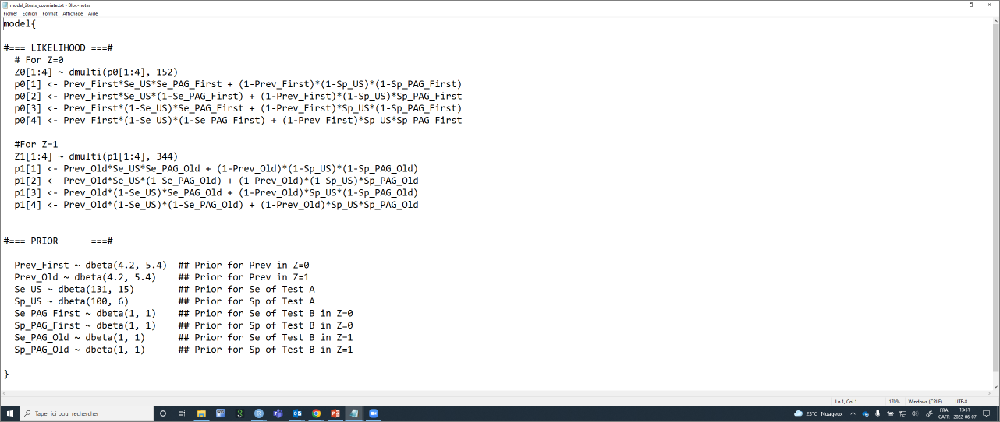

Chapter 11 Accuracy varying with covariate
So far we have (implicitly) assumed that tests’ accuracy (i.e., their Se and Sp) are the same for every individuals tested. Some diagnostic tests, however, may behave differently whether they are applied to individuals of a certain age, breed, etc. For instance, we could hypothesize that many of the diagnostic tests aiming at quantifying antibodies against a given pathogen will behave differently in neonates (which typically have an immature immune system) compared to juvenile or adult animals.
The situation where test accuracy varies as function of a characteristic of the individual tested (i.e., as function of a covariate) can be implemented relatively easily in the different LCM we have used so far. For instance, if we hypothesize that the accuracy of the PAG-based pregnancy test varies as function of whether the cow is a first lactation vs. and older cow, we would simply specify a LCM where we have two different PAG Se and Sp, one for first lactation cows (PAG_Se_first and PAG_Sp_first) and one for older cows (PAG_Se_old and PAG_Sp_old). We would also have to provide two sets of data (one for first lactation cows and one for older cows). Of course, in that specific example, we would now have three additional unknown parameters to estimate (one additional Se, one additional Sp, and one additional prevalence), with three additional degrees of freedom (one additional 2x2 table). So investigating whether test accuracy varies as function of a covariate will not help us make the LCM identifiable. We will still need to use another trick to make the model identifiable (e.g., informative priors, > 1 population, or >2 diagnostic tests).
11.1 Likelihood function when accuracy varies as function of covariate
If we have two diagnostic tests (Test A and Test B) applied to a single population, and if we assumed that the Se and Sp of one of the test (Test A) varies as function of a characteristic (Z) of the individual tested, then we would specify one likelihood function for the individuals without the characteristic (Z=0) and one likelihood function for the individual having the characteristic (Z=1). Moreover, we would estimate two Se and two Sp for the test which is hypothesized to vary as function of the covariate (Se_Z0, Sp_Z0, Se_Z1, Sp_Z1). Note that this could be extended to covariates with more than 2 levels. Thus, the likelihood function would become:
With Z=0:
\(n_0[1:4] \sim dmulti(P[1:4]_0, n_0)\)
\(P1_0 = P_0*SeA_0*SeB + (1-P_0)*(1-SpA_0)*(1-SpB)\)
\(P2_0 = P_0*SeA_0*(1-SeB) + (1-P_0)*(1-SpA_0)*SpB\)
\(P3_0 = P_0*(1-SeA_0)*SeB + (1-P_0)*SpA_0*(1-SpB)\)
\(P4_0 = P_0*(1-SeA_0)*(1-SeB) + (1-P_0)*SpA_0*SpB\)
With Z=1:
\(n_1[1:4] \sim dmulti(P[1:4]_1, n_1)\)
\(P1_1 = P_1*SeA_1*SeB + (1-P_1)*(1-SpA_1)*(1-SpB)\)
\(P2_1 = P_1*SeA_1*(1-SeB) + (1-P_1)*(1-SpA_1)*SpB\)
\(P3_1 = P_1*(1-SeA_1)*SeB + (1-P_1)*SpA_1*(1-SpB)\)
\(P4_1 = P_1*(1-SeA_1)*(1-SeB) + (1-P_1)*SpA_1*SpB\)
11.2 Organizing the data when accuracy varies as function of covariate
To run such a model, we simply need to provide a dataset presenting the cross tabulated results of the two tests for individuals with Z=0 and a second dataset for the individuals with Z=1. For instance, in the PAG vs. US study, the results of the PAG and US tests can be presented as function of the cow’s age as follows:
Table. Cross-classified results from a PAG and US in first lactation vs. older cows.
| First (Z=0) | Old (Z=1) | |||||
|---|---|---|---|---|---|---|
| US+ | US- | US+ | US- | |||
| PAG+ | 76 | 10 | PAG+ | 179 | 11 | |
| PAG- | 1 | 65 | PAG- | 1 | 153 |
The two datasets could be created as follows:
11.3 The JAGS model when accuracy varies as function of covariate
We could provide the values that will be used to described the prior distributions as we did before (so they are included in the model text file). The difference is that we now have, for one of the test, two Se and Sp and we also have one prevalence for Z=0 and one prevalence for Z=1. In the example below, I will use informative priors for these two prevalence (I will use the same priors for Z=0 and Z=1, but they could be different) and for US’ Se and Sp.
#I could first create labels for TestA and TestB
TestA <- "US"
TestB <- "PAG"
#I could create labels for Z=0 and Z=1
Z0 <- "First"
Z1 <- "Old"
#Provide information for the prior distributions (all beta distributions) for the unknown parameters
Prev0.shapea <- 4.2 #a shape parameter for Prev in Z=0
Prev0.shapeb <- 5.4 #b shape parameter for Prev in Z=0
Prev1.shapea <- 4.2 #a shape parameter for Prev in Z=1
Prev1.shapeb <- 5.4 #b shape parameter for Prev in Z=1
Se.TestA.shapea <- 131 #a shape parameter for Se of TestA
Se.TestA.shapeb <- 15 #b shape parameter for Se of TestA
Sp.TestA.shapea <- 100 #a shape parameter for Sp of TestA
Sp.TestA.shapeb <- 6 #b shape parameter for Sp of TestA
Se.TestB.Z0.shapea <- 1 #a shape parameter for Se of TestB in Z=0
Se.TestB.Z0.shapeb <- 1 #b shape parameter for Se of TestB in Z=0
Sp.TestB.Z0.shapea <- 1 #a shape parameter for Sp of TestB in Z=0
Sp.TestB.Z0.shapeb <- 1 #b shape parameter for Sp of TestB in Z=0
Se.TestB.Z1.shapea <- 1 #a shape parameter for Se of TestB in Z=1
Se.TestB.Z1.shapeb <- 1 #b shape parameter for Se of TestB in Z=1
Sp.TestB.Z1.shapea <- 1 #a shape parameter for Sp of TestB in Z=1
Sp.TestB.Z1.shapeb <- 1 #b shape parameter for Sp of TestB in Z=1
#I will also need the number of individuals tested in each populations (n0 and n1)
n <- sapply(datalist, sum)
n0 <- n[1]
n1 <- n[2]With that, we have everything that is needed to write the JAGS model.
#Create the JAGS text file
model_2tests_covariate <- paste0("model{
#=== LIKELIHOOD ===#
#For Z=0
Z0[1:4] ~ dmulti(p0[1:4], ",n0,")
p0[1] <- Prev_", Z0,"*Se_", TestA, "*Se_", TestB, "_", Z0," + (1-Prev_", Z0,")*(1-Sp_", TestA, ")*(1-Sp_", TestB, "_", Z0,")
p0[2] <- Prev_", Z0,"*Se_", TestA, "*(1-Se_", TestB, "_", Z0,") + (1-Prev_", Z0,")*(1-Sp_", TestA, ")*Sp_", TestB, "_", Z0,"
p0[3] <- Prev_", Z0,"*(1-Se_", TestA, ")*Se_", TestB, "_", Z0," + (1-Prev_", Z0,")*Sp_", TestA, "*(1-Sp_", TestB, "_", Z0,")
p0[4] <- Prev_", Z0,"*(1-Se_", TestA, ")*(1-Se_", TestB, "_", Z0,") + (1-Prev_", Z0,")*Sp_", TestA, "*Sp_", TestB, "_", Z0,"
#For Z=1
Z1[1:4] ~ dmulti(p1[1:4], ",n1,")
p1[1] <- Prev_", Z1,"*Se_", TestA, "*Se_", TestB, "_", Z1," + (1-Prev_", Z1,")*(1-Sp_", TestA, ")*(1-Sp_", TestB, "_", Z1,")
p1[2] <- Prev_", Z1,"*Se_", TestA, "*(1-Se_", TestB, "_", Z1,") + (1-Prev_", Z1,")*(1-Sp_", TestA, ")*Sp_", TestB, "_", Z1,"
p1[3] <- Prev_", Z1,"*(1-Se_", TestA, ")*Se_", TestB, "_", Z1," + (1-Prev_", Z1,")*Sp_", TestA, "*(1-Sp_", TestB, "_", Z1,")
p1[4] <- Prev_", Z1,"*(1-Se_", TestA, ")*(1-Se_", TestB, "_", Z1,") + (1-Prev_", Z1,")*Sp_", TestA, "*Sp_", TestB, "_", Z1,"
#=== PRIOR ===#
Prev_", Z0," ~ dbeta(",Prev0.shapea,", ",Prev0.shapeb,") ## Prior for Prev in Z=0
Prev_", Z1," ~ dbeta(",Prev1.shapea,", ",Prev1.shapeb,") ## Prior for Prev in Z=1
Se_", TestA, " ~ dbeta(",Se.TestA.shapea,", ",Se.TestA.shapeb,") ## Prior for Se of Test A
Sp_", TestA, " ~ dbeta(",Sp.TestA.shapea,", ",Sp.TestA.shapeb,") ## Prior for Sp of Test A
Se_", TestB, "_", Z0, " ~ dbeta(",Se.TestB.Z0.shapea,", ",Se.TestB.Z0.shapeb,") ## Prior for Se of Test B in Z=0
Sp_", TestB, "_", Z0, " ~ dbeta(",Sp.TestB.Z0.shapea,", ",Sp.TestB.Z0.shapeb,") ## Prior for Sp of Test B in Z=0
Se_", TestB, "_", Z1, " ~ dbeta(",Se.TestB.Z1.shapea,", ",Se.TestB.Z1.shapeb,") ## Prior for Se of Test B in Z=1
Sp_", TestB, "_", Z1, " ~ dbeta(",Sp.TestB.Z1.shapea,", ",Sp.TestB.Z1.shapeb,") ## Prior for Sp of Test B in Z=1
}")
#write as a text (.txt) file
write.table(model_2tests_covariate,
file="model_2tests_covariate.txt",
quote=FALSE,
sep="",
row.names=FALSE,
col.names=FALSE)With this code, you could, again, simply modify the labels for Test A and Test B, and for Z0 and Z1, and the shape parameters for the prior distributions. The text file with the JAGS model will automatically be updated. Currently, it looks like this:

Again, we will need to provide a list of initial values (one per Markov chain) for all unknown parameters. Careful, we now have two tests, but two Se and Sp for one of the test, and two prevalence.
#Initializing values for the parameters Prev, and the Ses and Sps of the two tests for the 3 chains.
inits <- list(list(Prev_First=0.50,
Prev_Old=0.50,
Se_US=0.90,
Sp_US=0.90,
Se_PAG_First=0.90,
Sp_PAG_First=0.90,
Se_PAG_Old=0.90,
Sp_PAG_Old=0.90),
list(Prev_First=0.60,
Prev_Old=0.60,
Se_US=0.80,
Sp_US=0.80,
Se_PAG_First=0.80,
Sp_PAG_First=0.80,
Se_PAG_Old=0.80,
Sp_PAG_Old=0.80),
list(Prev_First=0.40,
Prev_Old=0.40,
Se_US=0.70,
Sp_US=0.70,
Se_PAG_First=0.70,
Sp_PAG_First=0.70,
Se_PAG_Old=0.70,
Sp_PAG_Old=0.70)
)We can run the model using jags() function as seen before.
library(R2jags)
library(coda)
#Run the Bayesian model
bug.out <- jags(data=datalist,
model.file="model_2tests_covariate.txt",
parameters.to.save=c("Prev_First", "Prev_Old","Se_US", "Sp_US", "Se_PAG_First", "Sp_PAG_First", "Se_PAG_Old", "Sp_PAG_Old"),
n.chains=3,
inits=inits,
n.iter=11000,
n.burnin=1000,
n.thin=1,
DIC=FALSE) Then we could produce the diagnostic plots, compute the ESS, and print out our results as we did previously (results not shown).